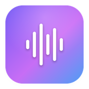
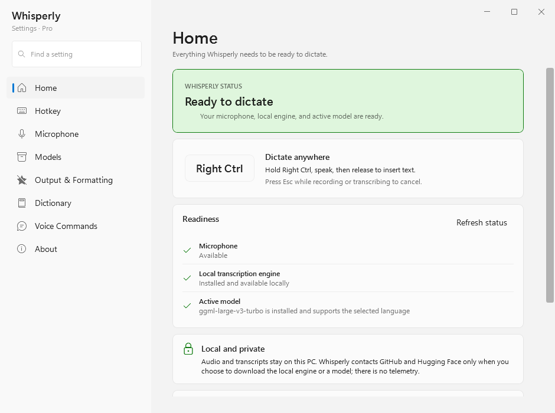

Whisperly for Windows
Hold a key, say what you mean, let go: the words appear wherever your cursor is. Speech becomes text on your own PC, through whisper.cpp. No account, no cloud, no telemetry.
Install
- Open the installer. It is not code-signed yet, so SmartScreen says Windows protected your PC: choose More info, then Run anyway.
-
It installs for your account only, into
%LOCALAPPDATA%\Programs\Whisperly, with no administrator prompt. Whisperly starts when you sign in unless you untick that box. - The setup guide takes about a minute: pick your microphone and watch the meter react, download a speech model, choose your key, and try it once before you rely on it.
Updating: Whisperly checks once a day and tells you when a new version is out. Run the new installer over the old one; your settings and models stay where they are. Uninstall from Windows Settings, under Apps, like any other app.
Using it
- Hold Right Ctrl
- Whisperly listens while the key is down; the capsule shows a live trace and a timer. Any Ctrl, Alt, Shift or Windows key can be the key instead.
- Let go
- The text is pasted at your cursor and your clipboard is put back. Settings can copy it instead, or type it character by character.
- Esc
- Cancels while recording or transcribing.
- Ctrl+Alt+Shift+V
- Search what you have dictated and paste it again. Pro.
- Tray icon
- Settings, history, and Transcribe File… for wav, mp3, m4a, aac, flac, aiff and wma recordings.
What it does

- Models
- Seven whisper.cpp models, from Tiny (75 MB) to Large v3 Turbo (1.6 GB). Each downloads from Hugging Face and is checked against its SHA-256 before use.
- Speed
- Runs on your graphics card through Vulkan, and on the processor when there is no usable GPU. The model stays loaded between dictations.
- Languages
- 100 languages and auto-detect with a multilingual model. Danish is handled end to end: punctuation by voice, decimal commas and names.
- Dictionary
- Replace what you say with what you mean, and keep a list of names and terms that should always be spelled your way.
- Voice commands
- Say “new line”, “period” or “open paren” and get the character.
- Prompt mode
- A second key that turns what you say into a cleaner prompt, shaped by a local model through Ollama.
- History
- Your last 200 dictations, kept on this PC. Turn it off or clear it in Settings.
Privacy
Your audio never leaves this PC, and there is no account or telemetry. Whisperly goes online only for these:
- Update check
- Once a day, one small request for the newest version number. Turn it off in Settings, under About.
- Models
- Downloaded from Hugging Face when you choose one.
- Engine
- If the bundled engine cannot start, you can install a processor-only build from GitHub.
- Prompt mode
- Local by default. If you switch its provider to a cloud model, the text you dictate in prompt mode is sent to that service, through your own sign-in.
Requirements
- Windows
- 10 or 11, 64-bit
- Disk
- About 225 MB installed, plus 75 MB to 1.6 GB for each model
- Graphics
- Optional. A Vulkan-capable GPU makes transcription faster.
- Microphone
- Any input Windows can use. Whisperly follows your default device unless you pick one.
This build
Loading release notes…
Checksum
Verify the download in PowerShell with
Get-FileHash
WhisperlySetup.exe -Algorithm
SHA256. The hash it prints must match this one.
—
A portable zip and every earlier version are on the releases page.
Whisperly for Mac
A menu-bar app with the same idea: hold Right ⌘, speak, let go, and the text lands at your cursor. Transcription runs on your Mac through whisper.cpp.
Install
-
Install the speech engine with
Homebrew:
brew install whisper-cpp. The Mac app uses it rather than bundling its own. -
Open
Whisperly.dmgand drag Whisperly into Applications. - The app is not notarized yet, so macOS refuses the first launch. After that first try, open System Settings, go to Privacy & Security and choose Open Anyway. On macOS 14 you can instead right-click Whisperly in Applications and choose Open.
- Setup asks for the microphone and Accessibility (to see your key and paste), downloads a model and lets you choose your key.
Using it
- Hold Right ⌘
- Records while the key is down. Right ⌥, Right ⌃, Right ⇧ or Fn can be the key instead.
- Let go
- Transcribes and pastes at your cursor, or copies or types it, as you choose in Settings.
- Esc
- Cancels while recording or transcribing.
- ⌃⌥⌘⇧V
- Search past dictations and paste one again.
- Menu bar
- History, settings, and Transcribe File… — or drop a recording on the icon.
Privacy
Your audio and text never leave your Mac, and there is no account or telemetry. Whisperly goes online only to download the models you choose from Hugging Face, and to check GitHub once a day for a newer version.
Requirements
- macOS
- 14 Sonoma or later
- Processor
- Apple silicon
- Engine
whisper-cppfrom Homebrew- Disk
- 2 MB for the app, plus 75 MB to 1.6 GB for each model
- Languages
- English, and nine more with the multilingual Large v3 Turbo model
This build
Loading release notes…
Checksum
Verify the download in Terminal with
shasum -a 256 Whisperly.dmg. The hash it prints must match this one.
—
Whisperly Pro
Whisperly is free to use. Pro is a one-time $29 license for the largest models and the history picker. No subscription, no account.
What Pro adds
- Medium
- The most accurate English-only model, about 1.5 GB.
- Large v3 Turbo
- The most accurate model overall, about 1.6 GB, and the best choice for any language other than English.
- History picker
- Ctrl+Alt+Shift+V opens a search over everything you have dictated; Enter pastes it again.
Everything else is free: the five other models, the dictionary, voice commands, prompt mode, file transcription and history. The current Mac build, 1.0.1, predates Pro, so everything in it is free.
Get a license
Licenses are issued by hand for now. Write and you get a key back by email.
Email for a licensemalthe@mbn-code.dk
Activate
- Open Whisperly's Settings and go to About.
-
Paste your key — it starts with
WHSP1.— and choose Activate.
The key is checked on your computer; nothing is sent anywhere to activate it, and it is not tied to one machine. A model you already downloaded keeps working even without Pro.